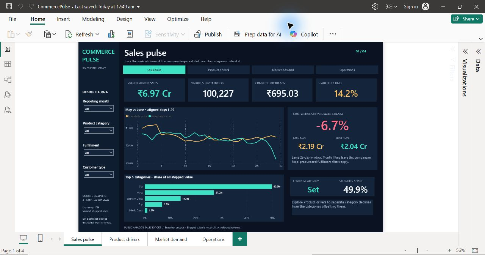
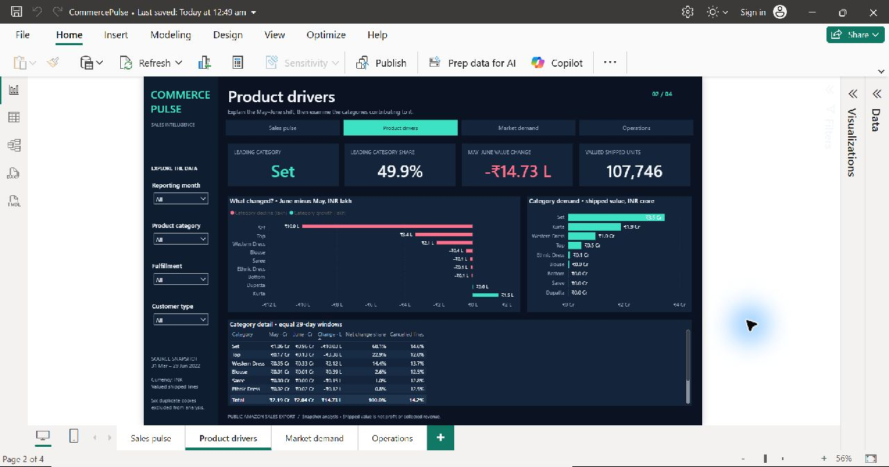
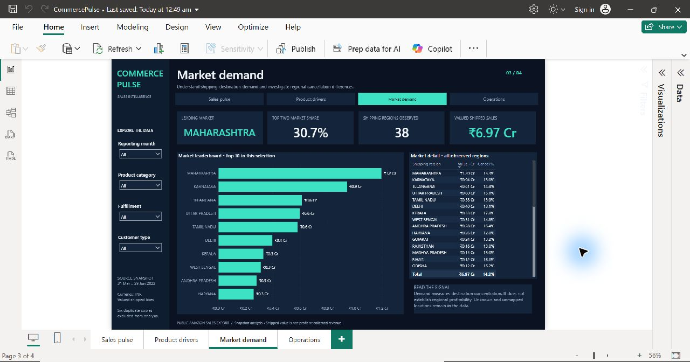
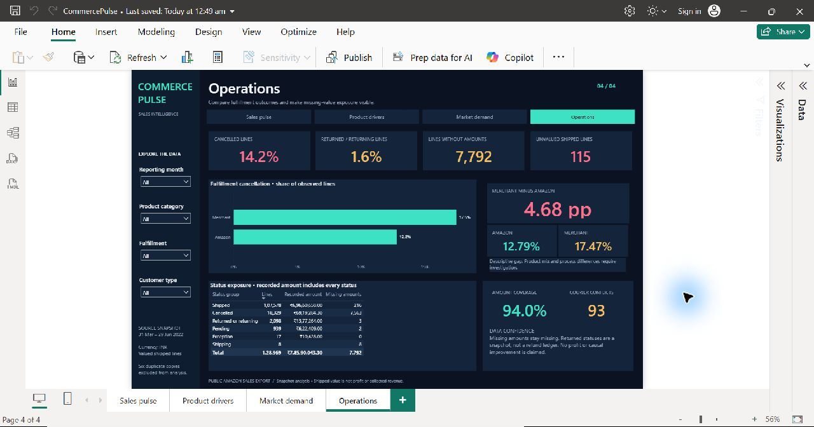

Daksh Bansal · Project Case Study
E-Commerce Sales Analytics
A reproducible Python–MySQL–Power BI analysis, extended with an LLM and RAG analyst.
The business question
Which products and regions drive shipped sales, what explains the comparable-period decline, and where do cancellation and data-quality issues need investigation?
Data and scope
Seven public CSV exports contain 178,405 source rows. The Amazon report supplies 128,975 source lines; excluding six flagged duplicate copies leaves 128,969 analytical lines across 120,378 orders. The snapshot spans 31 March–29 June 2022.
Source: Unlock Profits with E-Commerce Sales Data on Kaggle.
The analytical workflow
- Python profiles and cleans the source, normalizes categories and geography, and preserves missing amounts.
- MySQL stores separate staging tables and a star schema with a fact table at order-line grain.
- 14 SQL analyses calculate the metrics and business comparisons.
- Four Power BI pages use 45 DAX measures to present sales, product drivers, market demand and operations.
- A Streamlit assistant uses Gemini tool routing and semantic retrieval over four project documents. It displays SQL evidence, charts and cited source passages.
Findings and proposed actions
| Finding | Evidence | Proposed next action |
|---|---|---|
| Comparable shipped value declined | June 1–29 is 6.72% below May 1–29 | Review demand and availability using traffic and inventory history |
| Sets explain most of the net decline | 68.08% of the net decline; 49.86% of shipped value | Prioritize Set assortment, demand and replenishment review |
| Value is concentrated geographically | Maharashtra and Karnataka account for 30.71% | Validate costs and service performance before allocating spend |
| Merchant cancellation is higher | 17.47% versus 12.79% for Amazon fulfillment | Audit availability and handling; stratify by category and region |
| Missing values remain visible | 7,792 retained missing amounts; 115 unvalued shipped lines | Add amount, status and duplicate checks before operational use |
Dashboard




AI analyst and document retrieval
Natural-language questions select reviewed, parameterized SQL tools rather than executing model-generated SQL. SQL produces the numerical evidence; RAG retrieves definitions, cleaning decisions, field descriptions and source scope from project-authored documents.
The interface supports follow-up filters, an independent Query Explorer, aggregate CSV downloads and inspectable source passages. The assistant is a local application and requires a configured MySQL database and Gemini access for chat.
Validation
Python and MySQL checks reconcile row counts, money, units, category totals, regional totals and joins. All 45 DAX measures compiled, and 141 dashboard checks reconcile metrics and aligned daily comparisons with SQL. All four report pages were inspected in Power BI Desktop, including synchronized filters.
Interpretation limits
Shipped value is a status-based amount, not confirmed collected revenue. The data does not include a cost ledger, refund ledger or customer identifier, so it cannot establish profit, retention or causal uplift. Recommendations are follow-up hypotheses; no real-world business improvement is claimed.